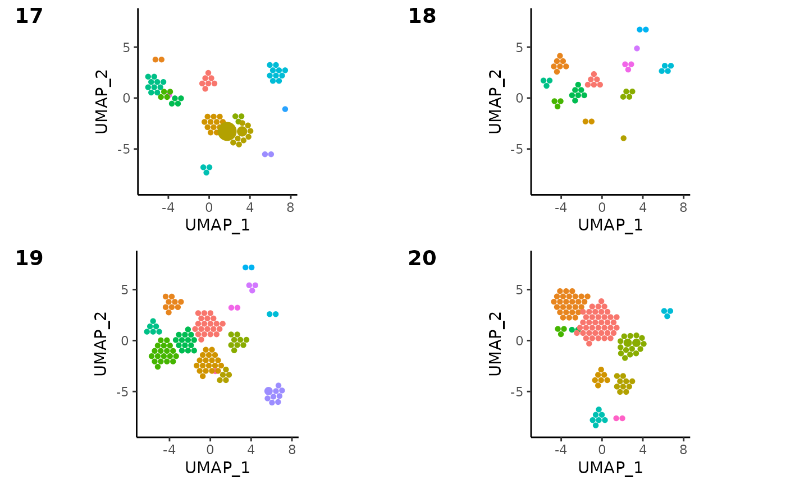
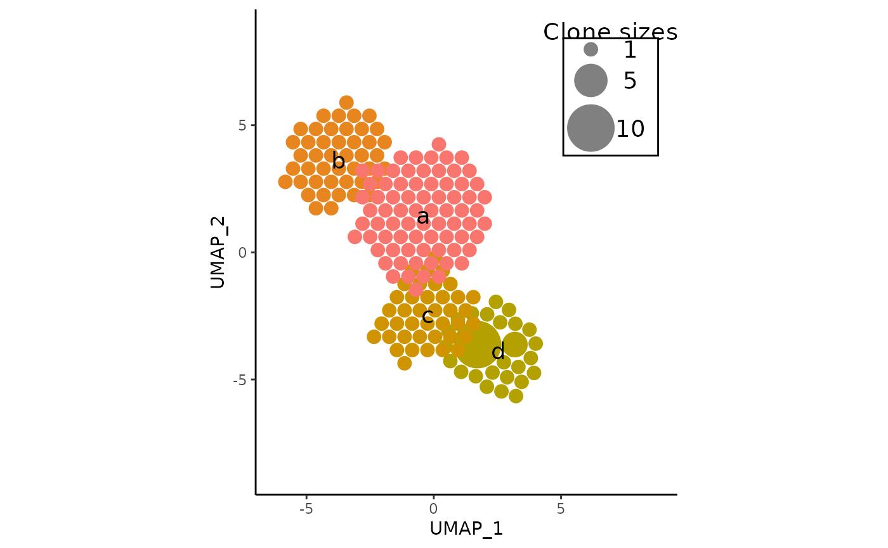
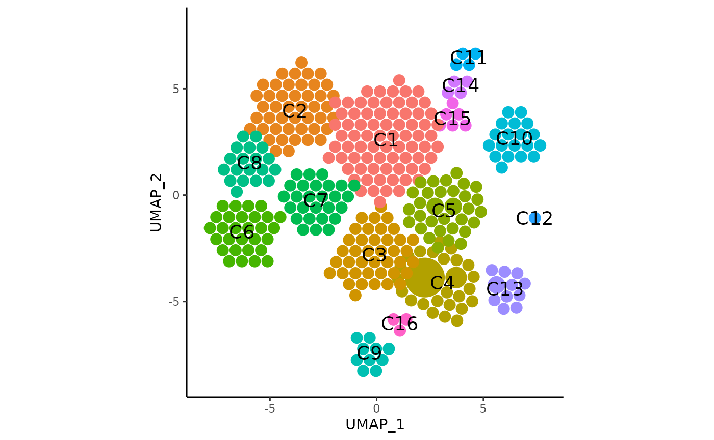

Storing and Fine-Tuning APackOfTheClones Runs
Source:vignettes/APackOfTheClones-runs.Rmd
APackOfTheClones-runs.RmdIntroduction
As demonstrated in vignette("APackOfTheClones"), after
processing the seurat & clonotype data properly with
scRepertoire, vizAPOTC provides a direct way
to produce the ball-packing clonal expansion visualization, though for
select users it may be somewhat clunky, if certain parameters need to be
readjusted constantly. In this vignette, more details about how
APackOfTheClones runs can be stored and re-adjusted will be covered -
mainly through RunAPOTC, APOTCPlot, and
AdjustAPOTC. Ensure to read the aforementioned vignette
before this one.
As a reminder, here’s how to set up the seurat object and clonotype data
library(scRepertoire)
# A seurat object named `pbmc` is loaded with a corresponding `contig_list`
pbmc <- scRepertoire::combineExpression(
scRepertoire::combineTCR(
contig_list,
samples = c("P17B", "P17L", "P18B", "P18L", "P19B", "P19L", "P20B", "P20L"),
removeNA = FALSE,
removeMulti = FALSE,
filterMulti = FALSE
),
pbmc,
cloneCall = "gene",
proportion = TRUE
)
print(pbmc)
#> An object of class Seurat
#> 2000 features across 500 samples within 1 assay
#> Active assay: RNA (2000 features, 2000 variable features)
#> 2 layers present: counts, data
#> 1 dimensional reduction calculated: umapOverview
All of vizAPOTC’s arguments are actually derived from
RunAPOTC and APOTCPlot. The former is
responsible for storing data of the S4 class ApotcData in
the seurat object under a named list in
@misc$APackOfTheClones under some character run ID, and the
latter allows the visualization of these data objects with some
customization. AdjustAPOTC has many arguments for adjusting
the data associated with some APackOfTheClones run stored by
RunAPOTC, including adjusting cluster positions, colors,
repulsion, etc. which can be visualized again with
APOTCPlot.
Managing APackOfTheClones run data
RunAPOTC has approximate the first half of
vizAPOTC’s arguments until max_repulsion_iter,
meaning it has all the data subsetting, circle size scaling, and cluster
repulsion capabilities covered in the previous vignette. The most
essential difference is the presence of the argument
run_id, which corresponds to an id for the
ApotcData object associated with some run. If left blank,
one will be automatically generated in the following format:
reduction_base;clonecall;keyword_arguments;extra_filter
where if keyword arguments and extra_filter are underscore
(_) characters if there was no input for the
... and extra_filter parameters.
# Here is the function ran with its default parameters
pbmc <- RunAPOTC(pbmc)
#> Initializing APOTC run...
#> * Setting `clone_scale_factor` to 0.3
#> * id for this run: umap;CTstrict;_;_
#>
#> Packing clones into clusters
#> [==================================================] 100%
#>
#> repulsing all clusters | max iterations = 20
#> [==================================================] 100%
#>
#> Completed successfully, time elapsed: 0.155 seconds
#>From the verbal queues, one can see how the run_id was
set. Here’s it ran again but with more optional arguments and a custom
run_id:
Important Note
Practically speaking, most users probably only really need to ever
work with visualizations from one run and mainly want to just adjust its
parameters or the aesthetics of the plot - or they already will have
several subsetted seurat objects. In these cases, feel free to
completely ignore any of the parameters related to run_id
or any other filtering parameter, as all functions default to using the
latest run if no identifying parameters are passed in.
Utilities for Managing APackOfTheClones Runs
It is to note that the data abstraction here with a
run_id is intentional, and users should not manually touch
any of the ApotcData objects with the seurat object unless
they are extremely familiar with the latest internal implementation.
Instead, here is a collection of functions that may be useful:
-
getApotcDataIds(pbmc)gets all currentrun_id’s, if any. -
getLastApotcDataId(pbmc)gets the latestrun_id, if any. -
containsApotcRun(pbmc, run_id = "foo")returns whether arun_idexists in the seurat object. -
renameApotcRun(pbmc, old_run_id = "foo", new_run_id = "bar")renames runs. -
deleteApotcData(pbmc, run_id = "foo")deletes all data associated with a certainrun_id.
APOTCPlot
To visualize stored APackOfTheClones runs, APOTCPlot
takes in a seurat object and the run_id. If no
run_id is provided, it defaults to using the latest run.
All other parameters are same as in the second half of
vizAPOTC. Although it is noteworthy that if the user had
always relied on auto-generated run_id’s then
APOTCPlot also has these subsetting arguments:
And putting in identical arguments to generate the original
ApotcData would work too, but this approach is less
recommended as its a lot more (unnecessarily) verbose. Here is
APOTCPlot in action:
# Here, plots for samples 17 - 20 as seen in the previous vignette are made, where
# `orig.ident` is a custom column in the example data with levels corresponding to sample ids:
# ("P17B" "P17L" "P18B" "P18L" "P19B" "P19L" "P20B" "P20L").
pbmc <- RunAPOTC(
pbmc, run_id = "P17", orig.ident = c("P17B", "P17L"), verbose = FALSE
)
pbmc <- RunAPOTC(
pbmc, run_id = "P18", orig.ident = c("P18B", "P18L"), verbose = FALSE
)
pbmc <- RunAPOTC(
pbmc, run_id = "P19", orig.ident = c("P19B", "P19L"), verbose = FALSE
)
pbmc <- RunAPOTC(
pbmc, run_id = "P20", orig.ident = c("P20B", "P20L"), verbose = FALSE
)
cowplot::plot_grid(
APOTCPlot(pbmc, run_id = "P17", retain_axis_scales = TRUE, add_size_legend = FALSE),
APOTCPlot(pbmc, run_id = "P18", retain_axis_scales = TRUE, add_size_legend = FALSE),
APOTCPlot(pbmc, run_id = "P19", retain_axis_scales = TRUE, add_size_legend = FALSE),
APOTCPlot(pbmc, retain_axis_scales = TRUE, add_size_legend = FALSE), # defaults to latest
labels = c("17", "18", "19", "20")
)
#> * generated ggplot object
#> * generated ggplot object
#> * generated ggplot object
#> * using the latest APackOfTheClones Run Data with object id: P20
#> * generated ggplot object
AdjustAPOTC
This function’s parameters help modify certain attributes about
APackOfTheClones runs, and has the exact same first six parameters as
APOTCPlot for managing which run to modify. It also
possesses the same four repulsion arguments in vizAPOTC and
RunAPOTC if a run is to be repulsed again. See the function
level documentation for the following parameters that can modify cluster
locations, colors, and the adjustment of the
clone_scale_factor and rad_scale_factor:
new_rad_scale_factor = NULL,
new_clone_scale_factor = NULL,
relocate_cluster = NULL,
relocation_coord = NULL,
nudge_cluster = NULL,
nudge_vector = NULL,
recolor_cluster = NULL,
new_color = NULL,
rename_label = NULL,
new_label = NULL,
relocate_label = NULL,
label_relocation_coord = NULL,
nudge_label = NULL,
label_nudge_vector = NULL,
verbose = TRUETip to Speeding up Adjustments
While the vizAPOTC and RunAPOTC /
APOTCPlot functions to do APackOfTheClones runs and
generate the ggplot object are relatively fast even for very large
seurat objects, plot display times can get quite long the more circles
there are. AdjustAPOTC is meant to be used in an
incremental/iterative manner, where the user can adjust one aspect,
inspect the plot, and adjust again if necessary, and repeat - the long
plot display times may pose as a large inconvenience.
Setting the argument detail to FALSE when
using APOTCPlot or vizAPOTC can help - this
will plot entire clusters as one large circle - speeding up plotting
times significantly. The details of the individual clonotype circles
will be lost but the inspection of other aspects like label locations
will be a much more pleasant process.
Usage Examples
Renaming Cluster Labels
After identification of the cell identity of each seurat cluster, it may be useful to rename each cluster label to the actual identity of the cells of each cluster. here is a minimal example of how this process is intended to be done:
# Do a run with just the first 4 seurat clusters, and rename labels
pbmc <- RunAPOTC(
pbmc,
run_id = "first_four",
seurat_clusters = 1:4,
verbose = FALSE
)
pbmc <- AdjustAPOTC(
pbmc,
run_id = "first_four",
rename_label = 1:4,
new_label = letters[1:4],
verbose = FALSE
)
APOTCPlot(
pbmc,
run_id = "first_four",
show_labels = TRUE,
retain_axis_scales = TRUE
)
#> * generated ggplot object
Extra Cluster Repulsion
Another possibility is that the default repulsion may have left the clusters too close - here this is corrected - and the labels are moved as well. Note the use of the pipe operator may also be useful.
pbmc <- pbmc %>%
RunAPOTC(run_id = "foo", verbose = FALSE) %>%
AdjustAPOTC(
run_id = "foo",
repulse = TRUE,
repulsion_threshold = 0.5,
verbose = FALSE
)
APOTCPlot(
pbmc,
show_labels = TRUE,
retain_axis_scales = TRUE,
add_size_legend = FALSE
)
#> * using the latest APackOfTheClones Run Data with object id: foo
#> * generated ggplot object